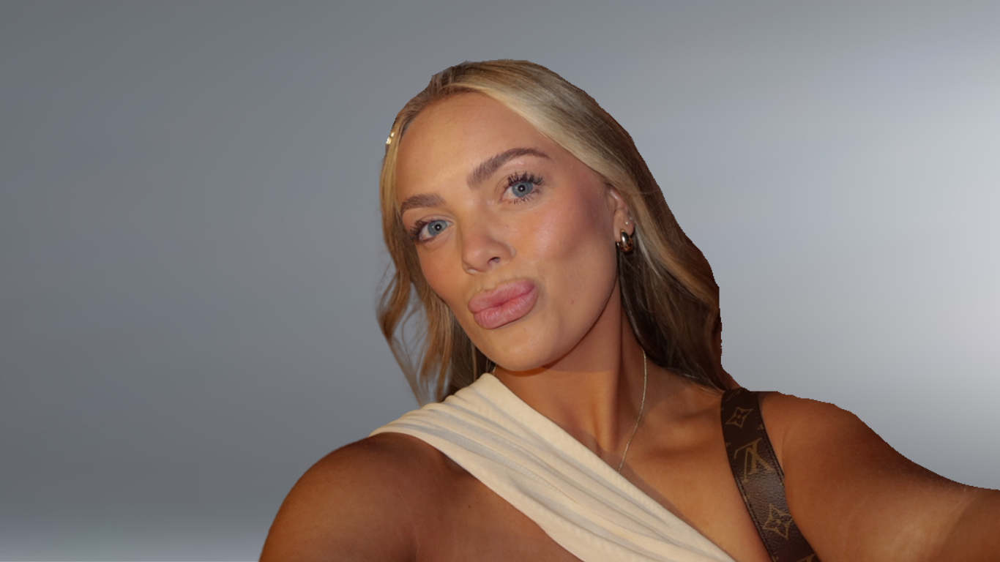

EXPERIENCE
Currently:
I am currently working in roles that have strengthened my experience in content creation, brand strategy, and marketing. At Stumble, I lead communications and creative execution, focusing on developing content, maintaining brand voice, and supporting overall growth. I also plan and execute events, manage outreach to potential ambassadors, and build partnerships that expand the brand's reach. Working in a startup environment has given me hands-on experience across multiple areas and allowed me to play a direct role in how the brand grows and connects with its audience.
Alongside this, I work as a choreographer and instructor at Hi Light Dance Academy, where I teach and train dancers while choreographing routines for competitions. I focus on developing both technical skills and confidence, while creating performances that are polished and competitive.
I also represent Bubble as a college ambassador, where I create content, promote products, and connect with students on campus to increase brand awareness through authentic, peer-driven engagement.
Past Experiences:
My previous experience began as a director and instructor at The Pointe, where I taught and mentored students while helping them build technique, confidence, and performance skills. This role developed my leadership, communication, and ability to connect with others, which continues to influence how I work today.
I also gained experience in customer facing roles, including working as a sales associate and stylist at Free People, where I assisted customers and supported visual merchandising, and as a shift lead at Palm Beach Tan, where I managed daily operations, delivered a strong customer experience, and consistently ranked as a top salesperson.
